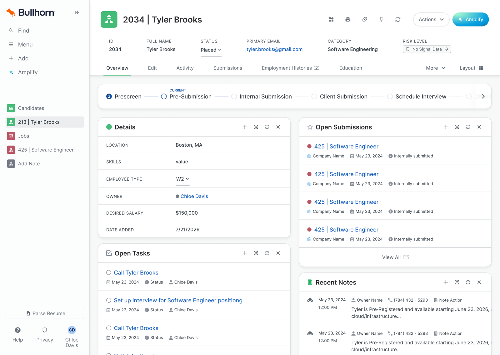
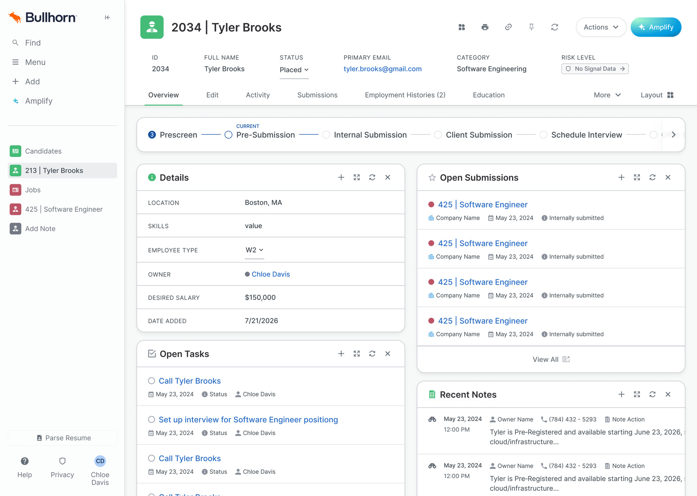

Candidate record — tab contrast
The feedback
Why the current page reads flat
- The cause is a compressed contrast range. Almost all secondary text — inactive tabs, field labels, metadata — sits in one narrow grey band (#677079, ~5:1 on white), with only a few darker elements. With no strong tonal separation, the eye has nothing to anchor on, so the page reads flat (Gestalt: figure-ground). One light-grey label is fine; a full tab row of them plus the body labels is what flattens it in aggregate.
- In our system, depth comes from tonal contrast between layers and 1px carved borders, not shadow. When the fonts and the lines are all this light, that depth disappears — which is the “lines” half of the observation (Gestalt: closure / common region).
- The extra pop in the Lovable designs is mostly luminance contrast, not the blue. We can match it by widening our grey range without introducing any blue.
- Net: restraint pushed slightly too far — minimal to the point of under-signaling (Nielsen: aesthetic vs. sufficient signal). The fix is more contrast, not more colour.
Current state
images/01-current-state.png, or open the live frame below.
color/text/subtle · #677079 · ~5:1
color/text/body · #3d464d · ~9.6:1
What each option changes
All three stay inside the system — no new colours, no new font weights beyond what we already use. Hierarchy today is built from two cues at once: font weight and colour. Each option decides how to spend those two cues.
| State | Weight | Colour | Token | Contrast |
|---|---|---|---|---|
| Active tab | Medium | #3d464d | color/text/body | ~9.6:1 |
| Inactive — current | Regular | #677079 | color/text/subtle | ~5:1 |
| Option 1 | Medium | #677079 | color/text/subtle | ~5:1 |
| Option 2 | Regular | #3d464d | color/text/body | ~9.6:1 |
| Option 3 | Regular | #525b63 | override — no token yet | ~6.9:1 |
Option 1 — heavier inactive tabs, same grey
Change: weight Regular → MediumColour: unchanged color/text/subtle #677079
images/02-option-1-heavier-weight.png, or open the live frame below.Why it works
Adds ink presence to the tab labels and keeps them consistent with our button text, which is also the subtle grey at Medium weight.
Trade-offs
It doesn’t change the grey the feedback is actually about — the colour stays #677079 at ~5:1. It also spends the weight cue: active and inactive both become Medium, so the two are separated only by colour and the underline, and matching weights make the selected tab harder to pick out (Gestalt: similarity).
Implementation. Easiest of the three — a weight swap on existing tokens, nothing new to add.
Option 2 — darker inactive tabs, same weight
Change: colour subtle → color/text/body #3d464dWeight: unchanged Regular
images/03-option-2-darker-color.png, or open the live frame below.Why it works
Fixes the root issue directly — contrast jumps from ~5:1 to ~9.6:1, restoring the tonal range and clearing accessibility comfortably. Selection then rests on weight plus the active underline, the standard tab pattern in Linear, Attio, and Notion (Gestalt: figure-ground carries the selected state).
Trade-offs
Inactive text now matches both the active colour and the current hover colour, so hovering a tab shows no change — we’d lose that feedback (Nielsen: visibility of system status) and would need to redefine the hover step. Active/inactive separation also drops from two cues to one.
Implementation. Easy — rebind to an existing token, plus a small hover follow-up.
Option 3 — mid-tone inactive tabs + darker lines
Change: inactive → #525b63 (~6.9:1), Regular keptLines: card borders gray/200 #dee0e3 → gray/300 #c2c5cb
images/04-option-3-mid-tone-and-lines.png, or open the live frame below.
#677079 · ~5:1
#525b63 · ~6.9:1
#3d464d · ~9.6:1
Why it works
It raises contrast while keeping both cues. The active tab stays darkest and heaviest; inactive drops one clear tone but stays Regular, so the selected tab is still obvious (Gestalt: figure-ground + similarity). It also acts on the “lines” by giving the card borders more carved definition (Gestalt: closure / common region) — the version closest to our carved-depth target.
Trade-offs
Our grey ramp has no step between gray/700 (#677079) and gray/800 (#3d464d), so the mid-tone text and the darker border are currently screen-level overrides rather than tokens.
Implementation. The most work — strongest result, but making it permanent means adding two tokens (a mid text grey, e.g. color/text/secondary, and a darker border), which is a shared-library change rather than a per-screen fix.